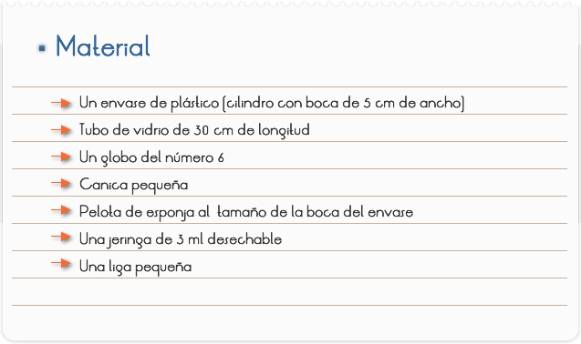
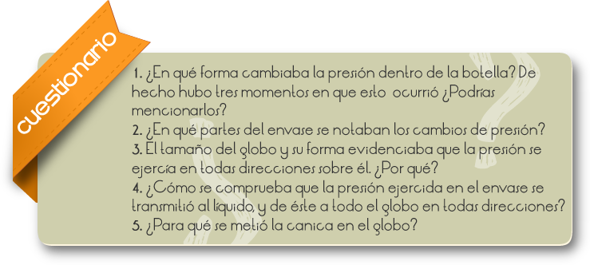
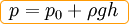
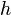
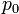
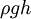

Introducción
El principio de Pascal (descubierto por Blaise Pascal a mediados del siglo XVII), que establece que "la presión que se aplica a un fluido que está dentro de un recipiente cerrado, se transmite en forma integra y en todas direcciones".
Al establecer que la presión se transmite íntegramente, es decir, sin pérdida alguna, tiene una implicación muy importante, pues significa que se puede transmitir una presión a grandes distancias y en todas direcciones.
Objetivo
Comprobar como la presión aplicada a un fluido estático dentro de un recipiente cerrado se transmite en todas direcciones.

1. Insertar el tubo de vidrio con mucho cuidado en la pelota de esponja, (observa la imagen).
2. Mete la canica dentro del globo y colócalo en uno de los extremos de la varilla, utiliza la liga para asegurar que no se escape el gas, (mídelo al envase de tal forma que el globo no toque la base del mismo).
3. Ahora vierte agua al tubo utilizando la jeringa con aguja para que llegue hasta el globo y se llene.
4. Ponle agua el envase de plástico hasta ¾ partes de su capacidad.
5. Coloca ahora la pelota con el globo y el tubo en la boca del envase, trata de que embone bien y no se salga.
6. Ahora con mucho cuidado sumerge el globo empujando el tubo de vidrio.
7. Observa lo que sucede con el globo al ir metiendo más el tubo así como el agua que tiene el tubo.
8. Una vez que el globo toque la base del envase, apriétalo.
RESULTADOS
1. Cuando colocaste la pelota en la boca del envase, ¿Qué sucedió con el nivel del agua dentro del tubo y con el globo?
2. Mientras hundías el globo en el envase, ¿Qué sucedía?, ¿y qué ocurría con el nivel del agua dentro del tubo?
3. Al presionar la botella con el globo en el fondo. ¿Qué le sucedió al globo?, ¿y al nivel del agua dentro del tubo?
4. En cada uno de los casos presentados, ¿Qué sucedió con la forma del globo?, ¿Cambiaba o sólo disminuía?

Comentarios
En Física, el principio de Pascal o ley de Pascal, es una ley enunciada por el físico y matemático francés Blaise Pascal (1623-1662) que se resume en la frase: «el incremento de presión aplicado a una superficie de un fluido incompresible (líquido), contenido en un recipiente indeformable, se transmite con el mismo valor a cada una de las partes del mismo».
El principio de Pascal puede comprobarse utilizando una esfera hueca, perforada en diferentes lugares y provista de un émbolo. Al llenar la esfera con agua y ejercer presión sobre ella mediante el émbolo, se observa que el agua sale por todos los agujeros con la misma presión.
El principio de Pascal puede ser interpretado como una consecuencia de la ecuación fundamental de la hidrostática y del carácter altamente incompresible de los líquidos. En esta clase de fluidos la densidad es prácticamente constante, de modo que de acuerdo con la ecuación:

Donde:
, presión total a la profundidad  .
 presión sobre la superficie libre del fluido.
Si se aumenta la presión sobre la superficie libre, por ejemplo, la presión total en el fondo ha de aumentar en la misma medida, ya que el término  no varía al no hacerlo la presión total (obviamente si el fluido fuera compresible, la densidad del fluido respondería a los cambios de presión y el principio de Pascal no podría cumplirse).